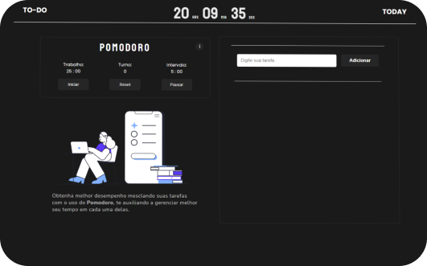

To-do Today é a melhor ferramenta para te auxiliar e melhorar a sua produtividade durante seus estudos.
Fazer anotações é uma das táticas mais eficazes para potencializar e acelerar o aprendizado e memorização.
Escrever favorece o processo de memorização, ao ter tudo anotado, não deixamos que nada fique para trás interferindo nossa produtividade.
Um bom planejamento diário faz total diferença para quem deseja aprender a ser mais produtivo.